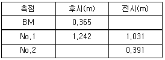
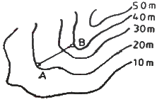
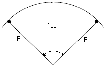
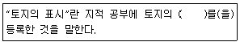

지적산업기사 (2016-05-08 기출문제)
1과목: 지적측량
1. 지적기준점표지의 설치ㆍ관리 및 지적기준점 성과의 관리 등에 관한 설명으로 옳은 것은?
- 지적삼각보조점성과는 지적소관청이 관리하여야 한다.
- 지적기준점표지의 설치권자는 국토지리정보 원장이다.
- 지적소관청은 지적삼각점성과가 다르게 된 때에는 그 내용을 국토교통부 장관에게 통보하여야 한다.
- 지적도근점표지의 관리는 토지소유자가 하여야 한다.
(정답률: 84%)

2. 다음 중 직각좌표의 기준이 되는 직각좌표계 원점에 해당하지 않는 것은?
- 동부좌표계(동경 129°00‘ 북위 38°00’)
- 중부좌표계(동경 127°00‘ 북위 38°00’)
- 서부좌표계(동경 125°00‘ 북위 38°00’)
- 남부좌표계(동경 123°00‘ 북위 38°00’)
(정답률: 86%)
3. 도선법에 의하여 지적도근측량을 하였다. 지형상 부득이 한 경우 1도선 점의 수를 최대 몇 점까지 할 수 있는가?
- 20점
- 30점
- 40점
- 50점
(정답률: 56%)
4. 100m의 천줄자를 사용하여 A, B 두 점 간의 거리를 측정하였더니 3.5km였다. 이 천줄자가 표준길이와 비교하여 30cm가 짧았다면 실제 거리는?
- 3510.5m
- 3489.5m
- 3499.0m
- 3501.0m
(정답률: 70%)
5. 토지조사사업 당시의 삼각측량에서 기선은 전국에 몇 개소를 설치하였는가?
- 7개소
- 10개소
- 13개소
- 16개소
(정답률: 77%)
6. 지적 관련 법규에 따른 면적측정 방법에 해당하는 것은?
- 지상삼사법
- 도상삼사법
- 스타디아법
- 좌표면적계산법
(정답률: 87%)
7. 어떤 두 점 간의 거리를 같은 측정방법으로 n회 측정하였다. 그 참값을 L, 최확값 L0라 할 때 참오차(E)를 구하는 방법으로 옳은 것은?
- E=L÷L0
- E=L×L0
- E=L-L0
- E=L+L0
(정답률: 86%)
8. 지적삼각보조점측량에 대한 설명이 틀린 것은?
- 지적삼각보조점측량을 할 때에 필요한 경우에는 미리 지적삼각보조점표지를 설치하여야 한다.
- 지적삼각보조점의 일련번호 앞에는 “보”자를 붙인다.
- 영구표지를 설치하는 경우에는 시ㆍ군ㆍ구별로 일련번호를 부여한다.
- 지적삼각보조점은 교회망, 유심다각망 또는 삽입망으로 구성하여야 한다.
(정답률: 77%)
9. 다음 중 측량 기준에 대한 설명으로 옳지 않은 것은?
- 수로조사에서 간출지(刊出地)의 높이와 수심은 기본수준면을 기준으로 측량한다.
- 지적측량에서 거리와 면적은 지평면상의 값으로 한다.
- 보통 측량의 원점은 대한민국 경위도원점 및 수준원점으로 한다.
- 보통 위치는 세계측지계에 따라 측정한 지리학적 경위도와 평균해수면으로부터의 높이를 말한다.
(정답률: 49%)
10. 평판측량의 장점으로 옳지 않은 것은?
- 내업이 적어 작업이 신속하다.
- 고저 측량이 용이하게 이루어진다.
- 측량장비가 간편하고 사용이 편리하다.
- 측량 결과를 현장에서 직접 제도할 수 있다.
(정답률: 72%)
11. 지적도근점의 연직각을 관측하는 경우 올려본 각과 내려본 각을 관측하여 그 교차가 최대 얼마 이내일 때에 그 평균치를 연직각으로 하는가?
- 30“ 이내
- 40“ 이내
- 60“ 이내
- 90“ 이내
(정답률: 61%)
12. 도선법에 따른 지적도근점의 각도관측을 할 때에 오차의 배분방법 기준으로 옳은 것은? (단, 배각법에 따르는 경우)
- 측선장에 비례하여 각 측선의 관측각에 배분한다.
- 측선장에 반비례하여 각 측선의 관측각에 배분한다.
- 변의 수에 비례하여 각 측선의 관측각에 배분한다.
- 변의 수에 반비례하여 각 측선의 관측각에 배분한다.
(정답률: 60%)
13. 축척 1000분의 1지역의 지적도에서 도상거리가 각각 2cm, 3cm, 4cm일 때 실제 면적은?
- 200.1m2
- 290.5m2
- 350.9m2
- 400.3m2
(정답률: 65%)
14. 지적측량에서 기초측량에 해당하지 않는 것은?
- 지적삼각보조점측량
- 지적삼각점측량
- 지적도근점측량
- 세부측량
(정답률: 86%)
15. 축척 1/600인 지적도 시행지역에서 일람도를 작성할 때 일반적인 축척은?
- 1/600
- 1/1200
- 1/3000
- 1/6000
(정답률: 61%)
16. 지적삼각보조점 측량에서 2개의 삼각점으로부터 산출한 종선교차가 0.40m, 횡선교차가 0.30m일 때 연결교차는 얼마인가?
- 0.30m
- 0.40m
- 0.50m
- 0.60m
(정답률: 73%)
17. 평판측량방법에 따른 세부측량을 도선법으로 하는 경우 도선의 변은 몇 개 이하로 하여야 하는가?
- 10개
- 15개
- 20개
- 30개
(정답률: 79%)
18. 광파기측량방법에 따라 다각망도선법으로 지적삼각보조점 측량을 하는 경우 1도선의 거리는 최대 얼마 이하로 하여야 하는가?
- 1km
- 2km
- 3km
- 4km
(정답률: 64%)
19. 세부측량을 평판측량방법으로 시행할 때 지적도를 갖춰 두는 지역에서의 거리측정단위기준은?
- 2cm
- 5cm
- 10cm
- 20cm
(정답률: 67%)
20. 지적삼각보조점측량의 기준에 대한 내용이 옳은 것은?
- 지적삼각보조점은 삼각망 또는 교점다각망으로 구성한다.
- 교회법으로 지적삼각보조점측량을 할 때에 삼각형의 각 내각은 30도 이상 120도 이하로 한다.
- 다각망도선법으로 지적삼각보조점측량을 할 때 1도선의 거리는 5km 이하로 한다.
- 지적삼각보조점은 영구 표지를 설치하는 경우에는 시ㆍ도별로 일련번호를 부여한다.
(정답률: 64%)
2과목: 응용측량
21. 폭이 120m이고 양안의 고저차가 1.5m 정도인 하천을 횡단하여 정밀하게 고저측량을 실시할 때 양안의 고저차를 관측하는 방법으로 가장 적합한 것은?
- 교호 고저 측량
- 직접 고저 측량
- 간접 고저 측량
- 약 고저 측량
(정답률: 82%)
22. 등고선의 성질에 대한 설명으로 옳은 것은?
- 등고선은 분수선과 평행하다.
- 평면을 이루는 지표의 등고선은 서로 수직한 직선이다.
- 수원(水源)에 가까운 부분은 하류보다도 경사가 완만하게 보인다.
- 동일한 경사의 지표에서 두 등고선 간의 수평거리는 서로 같다.
(정답률: 62%)
23. 항공사진에서 기복변위량을 구하는데 필요한 요소가 아닌 것은?
- 지형의 비고
- 촬영고도
- 사진의 크기
- 연직점으로부터의 거리
(정답률: 71%)
24. GNSS 오차 중 손신된 신호를 동기화하는데 발생하는 시계오차와 전기적 잡음에 의한 오차는?
- 수신기오차
- 위성의 시계오차
- 다중 전파경로에 의한 오차
- 대기조건에 의한 오차
(정답률: 68%)
25. BM에서 출발하여 NO.2까지 수준측량한 야장이 다음과 같다. BM와 NO.2의 고저차는?

- 1.350m
- 1.185m
- 0.350m
- 0.185m
(정답률: 62%)
26. 터널측량에 관한 설명으로 옳지 않은 것은?
- 터널 내에서의 곡선설치는 지상의 측량방법과 동일하게 한다.
- 터널 내의 측량기기에는 조명이 필요하다.
- 터널 내의 측점은 천정에 설치하는 것이 좋다.
- 터널 측량은 터널 내 측량, 터널 외 측량, 터널 내외 연결측량으로 구분할 수 있다.
(정답률: 80%)
27. 다음 중 절대표정(대지표정)과 관계가 먼 것은?
- 경사 조정
- 축척 조정
- 위치 결정
- 초점거리 결정
(정답률: 40%)
28. 등고선의 간접 측정방법이 아닌 것은?
- 사각형 분할법(좌표점법)
- 기준점법(종단점법)
- 원곡선법
- 횡단점법
(정답률: 63%)
29. 클로소이드 곡선에서 매개번호 A=400, 곡선반지름 R=150m일 때 곡선의 길이 L은?
- 560.2m
- 898.4m
- 1066.7m
- 2066.7m
(정답률: 56%)
30. 일반 사진기와 비교한 항공사진 측량용 사진기의 특징에 대한 설명으로 틀린 것은?
- 초점길이가 짧다.
- 렌즈지름이 크다.
- 왜곡이 적다.
- 해상력과 선명도가 높다.
(정답률: 60%)
31. 사거리가 50m인 경사터널에서 수평각을 측정한 시준선에 직각으로 5mm의 시준오차가 생겼다면 수평각에 미치는 오차는?
- 21“
- 25“
- 31“
- 43“
(정답률: 53%)
32. 축척 1:25000 지형도에서 A, B 지점간의 경사각은? (단, AB간의 도상거리는 4cm이다.)

- 0°01‘41“
- 1°08‘45“
- 1°43‘06“
- 2°12‘26“
(정답률: 67%)
33. 표고에 대한 설명으로 옳은 것은?
- 두 점 간의 고저차를 말한다.
- 지구 중력 중심에서부터의 높이를 말한다.
- 삼각점으로부터의 고저차를 말한다.
- 기준면으로부터의 연직거리를 말한다.
(정답률: 56%)
34. 항공삼각측량의 3차원 항공삼각측량 방법 중에서 공선 조건식을 이용하는 해석법은?
- 블록조정법
- 에어로 폴리곤법
- 독립모델법
- 번들조정법
(정답률: 61%)
35. 종중복도 60%로 항공사진을 촬영하여 밀착사진을 인화했을 때 주점과 주점간의 거리가 9.2cm이었다면 이 항공사진의 크기는?
- 23cm×23cm
- 18.4cm×18.4cm
- 18cm×18cm
- 15.3cm×15.3cm
(정답률: 61%)
36. 다음 중 완화곡선에 사용되지 않는 것은?
- 클로소이드
- 2차 포물선
- 렘니스케이트
- 3차 포물선
(정답률: 84%)
37. 항송사진의 특수 3점이 아닌 것은?
- 주점
- 연직점
- 등각점
- 지상기준점
(정답률: 82%)
38. 교각 I=80°, 곡선반지름 R=140m인 단곡선의 교점(IP)의 추가거리가 1427.25m일 때 곡선의 시점(B.C)의 추가거리는?
- 633.27m
- 982.87m
- 1309.78m
- 1567.25m
(정답률: 59%)
39. 정확한 위치에 기준국을 두고 GPS 위성 신호를 받아 기준국 주위에서 움직이는 사용자에게 위성신호를 넘겨주어 정확한 위치를 계산하는 방법은?
- DOP
- DGPS
- SPS
- S/A
(정답률: 74%)
40. 단곡선을 그림과 같이 설치되었을 때 곡선반지름 R은? (단, I=30°30')

- 197.00m
- 190.09m
- 187.01m
- 180.08m
(정답률: 56%)
3과목: 토지정보체계론
41. 지적속성자료를 입력하는 장치는?
- 스캐너
- 키보드
- 디지타이저
- 플로터
(정답률: 77%)
42. 개방형 지리정보시스템(Open Gis)에 대한 설명으로 옳지 않은 것은?
- 시스템 상호간의 접속에 대한 용이성과 분산처리 기술을 확보하여야 한다.
- 국가 공간정보 유통기구를 통해 유통할 경우 개방형 GIS 구축이 필수적이다.
- 서로 다른 GIS 데이터의 혼용을 막기 위하여 같은 종류의 데이터만을 교환이 가능하도록 해야 한다.
- 정보의 교환 및 시스템의 통합과 다양한 분야에서 공유할 수 있어야 한다.
(정답률: 87%)
43. 4개의 타일(tile)로 분할된 지적도 레이어를 하나의 레이어로 편집하기 위해서는 다음의 어떤 기능을 이용하여야 하는가?
- Map join
- Map overlay
- Map filtering
- Map loading
(정답률: 79%)
44. 공간자료에 대한 설명으로 옳지 않은 것은?
- 공간자료는 일반적으로 도형자료와 속성자료로 구분한다.
- 도형자료는 점, 선, 면의 형태로 구성된다.
- 도형자료에는 통계자료, 보고서, 범례 등이 포함된다.
- 속성자료는 일반적으로 문자나 숫자로 구성되어 있다.
(정답률: 78%)
45. 수치표도데이터를 취득하고자 한다. 다음 중 DEM 보간법의 종류와 보간방식의 설명이 틀린 것은?
- Bilinerar:거리값으로 가중치를 적용한 보간법
- Inverse weighted distance:거리값의 역으로 가중치를 적용한 보간법
- Inverse weighted square distance:거리의 제곱값에 역으로 가중치를 적용한 보간법
- Nearest neighbor:가장 가까운 거리에 있는 표고값으로 대체하는 보간법
(정답률: 55%)
46. 다음 중 다목적지적의 3대 구성요소에 해당되지 않는 것은?
- 층별권원도
- 측지기준망
- 기본도
- 지적중첩도
(정답률: 83%)
47. 지적공부 정리 중에 잘못 정리하였음을 즉시 발견하여 정정할 때 오기 정정할 지적전산 자료를 출력하여 확인을 받아야 하는 사람은?
- 시장ㆍ군수ㆍ구청장
- 시ㆍ도지사
- 지적전산자료 책임관
- 국토교통부장관
(정답률: 67%)
48. 기준좌표계의 장점이라고 볼 수 없는 것은?
- 자료의 수집과 정리를 분산적으로 할 수 있다.
- 전세계적으로 이해할 수 있는 표현 방법이다.
- 공간데이터의 입력을 분산적으로 할 수 있다.
- 거리와 면적에 대한 기준이 분산된다.
(정답률: 57%)
49. 필지단위로 토지정보체계를 구축할 경우 적합하지 않는 것은?
- 원격탐사
- gps측량
- 항공사진측량
- 디지타이저
(정답률: 49%)
50. 토지정보시스템의 구성요소에 해당하지 않는 것은?
- 하드웨어
- 조직 및 인력
- 지리정보지식
- 소프트웨어
(정답률: 83%)
51. 데이터베이스관리시스템의 장점으로 틀린 것은?
- 자료구조의 단순성
- 데이터의 독립성
- 데이터의 중복 저장의 감소
- 데이터의 보안 보장
(정답률: 61%)
52. 토지정보시스템에 대한 설명으로 가장 거리가 먼 것은?
- 법률적 행정적, 경제적 기초 하에 토지에 관한 자료를 체계적으로 수집한 시스템이다.
- 협의의 개념은 지적을 중심으로 지적 공부에 표시된 사항을 근거로 하는 시스템이다.
- 지상 및 지하의 공급시설에 대한 자료를 효율적으로 관리하는 시스템이다.
- 토지 관련 문제의 해결과 토지정책의 의사결정을 보조하는 시스템이다.
(정답률: 66%)
53. 다음은 토지기록전산화 사업과 관련된 설명으로 틀린 것은?
- 시ㆍ군ㆍ구 온라인화
- 지적도와 임야도의 구조화
- 자료의 무결성
- 업무처리 절차의 표준화
(정답률: 47%)
54. 지리정보의 유형을 도형정보와 속성정보로 구분할 때 도형정보에 포함되지 않는 것은?
- 필지
- 교통사고지점
- 행정구역경계선
- 도로준공날짜
(정답률: 73%)
55. 다음 중 2차적으로 자료를 이용하여 공간 데이터를 취득하는 방법은?
- 디지털 원격탐사 영상
- 디지털 항공사진 영상
- GPS 관측 데이터
- 지도로부터 추출한 DEM
(정답률: 78%)
56. 레스터데이터에 관한 설명으로 옳은 것은?
- 객체의 형상을 다소 일반화시키므로 공간적인 부정확성과 분류의 부정확성을 가지고 있다.
- 데이터의 구조가 복잡하지만 데이터 용량이 작다.
- 셀 수를 줄이면 공간해상도를 높일 수 있다.
- 원격탐사자료와의 연계가 어렵다.
(정답률: 56%)
57. 지적전산정보시스템의 사용자권한 등록파일에 등록하는 사용자의 권한 구분으로 틀린 것은?
- 사용자의 신규등록
- 법인의 등록번호 업무관리
- 개별공시지가 변동의 관리
- 토지등급 및 기준 수확량등급 변동의 관리
(정답률: 44%)
58. 토지정보시스템의 도형정보 구성요소인 점ㆍ선ㆍ면에 대한 설명으로 옳지 않은 것은?
- 점은 x, y좌표를 이용하여 공간위치를 나타낸다.
- 선은 속성데이터와 링크할 수 없다.
- 면은 일정한 영역에 대한 면적을 가질 수 있다.
- 선은 도로, 하천, 경계 등 시작점과 끝점을 표시하는 형태로 구성된다.
(정답률: 72%)
59. 토지정보시스템 구축에 있어 지적도와 지형도를 중첩할 때 비연속도면을 수정하는데 가장 효율적인 자료는?
- 정사항공영상
- TIN 모형
- 수치표고모델
- 토지이용현황도
(정답률: 56%)
60. 토지정보시스템에서 속성정보로 취급할 수 있는 것은?
- 토지 간의 인접관계
- 토지 간의 포함관계
- 토지 간의 위상관계
- 토지의 지목
(정답률: 62%)
4과목: 지적학
61. 다음 중 토지조사사업의 토지 사정 당시 별필(別筆)로 하였던 사유에 해당되지 않는 것은?
- 도로, 하천 등에 의하여 자연구획을 이룬 것
- 토지의 소유자와 지목이 동일하고 연속된 것
- 지반의 고저차가 심한 것
- 특히 면적이 광대한 것
(정답률: 65%)
62. 지적공부를 토지대장 등록지와 임야대장 등록지로 구분하여 비치하고 있는 이유는?
- 토지이용 정책
- 정도(정도(精度)의 구분)
- 조사사업 근거의 상이
- 지번(지번(地番)의 번잡성 해소
(정답률: 72%)
63. 둠즈데이 북(Domesday Book)과 관계 깊은 나라는?
- 프랑스
- 이탈리아
- 영국
- 이집트
(정답률: 81%)
64. 조선시대 결부제에 의한 면적단위에 대한 설명 중 틀린 것은?
- 1결을 100부이다.
- 1부는 1000파이다.
- 1속은 10파이다.
- 1파는 곡식 한줌에서 유래하였다.
(정답률: 62%)
65. 다음 중 1910년대의 토지조사사업에 따른 일필지 조사의 업무 내용에 해당하지 않는 것은?
- 지번조사
- 지주조사
- 지목조사
- 역둔토조사
(정답률: 69%)
66. 다음 중 지적업무의 전산화 이유와 거리가 먼 것은?
- 민원처리의 신속화
- 국토 기본도의 정확한 작성
- 자료의 효율적 관리
- 지적 공부 관리의 기계화
(정답률: 58%)
67. 다음 중 지목설정 시 기본원칙이 되는 것은?
- 토지의 모양
- 토지의 주된 사용목적
- 토지의 위치
- 토지의 크기
(정답률: 82%)
68. 일반적으로 지적제도와 부동산 등기제도의 발달과정을 볼 때 연대적 또는 업무절차상으로의 선후관계는?
- 두 제도가 같다.
- 등기제도가 먼저이다.
- 지적제도가 먼저이다.
- 불분명하다.
(정답률: 76%)
69. 일필지에 대한 설명 중 틀린 것은?
- 물권이 미치는 범위를 지정하는 구획이다.
- 하나의 지번이 붙는 토지의 등록단위이다.
- 자연현상으로써의 지형학적 단위이다.
- 폐합 다각형으로 나타낸다.
(정답률: 82%)
70. 토지조사 시 소유자 사정(査定)에 불복하여 고등토지조사 위원회에서 사정과 다르게 재결(裁決)이 있는 경우 재결에 따른 변경의 효력 발생 시기는?
- 사정일에 소급
- 재결일
- 재결서 발송일
- 재결서 접수일
(정답률: 58%)
71. 다음 중 지적제도의 특성으로 가장 거리가 먼 것은?
- 안전성
- 간편성
- 정확성
- 유사성
(정답률: 71%)
72. 우리나라 토지조사사업 당시 토지소유권의 사정원부로 사용하기 위하여 작성한 공부는?
- 지세명기장
- 토지조사부
- 역둔토대장
- 결수연명부
(정답률: 68%)
73. 다음 중 개별 토지를 중심으로 등록부를 편성하는 토지 대장의 편성 방법은?
- 물적 편성주의
- 인적 편성주의
- 연대적 편성주의
- 물적ㆍ인적 편성주의
(정답률: 77%)
74. 지적국정주의는 표지표시사항의 결정권한은 국가만이 가진다는 이념으로 그 취지와 가장 거리가 먼 것은?
- 처분성
- 통일성
- 획일성
- 일관성
(정답률: 70%)
75. 양지아문에서 양전 사업에 종사하는 실무진에 해당되지 않는 것은?
- 양무감리
- 양무위원
- 조사위원
- 총재관
(정답률: 71%)
76. 지적의 역할에 해당하지 않는 것은?
- 토지평가의 자료
- 토지정보의 관리
- 토지소유권의 보호
- 부동산의 적정한 가격형성
(정답률: 77%)
77. 다음 중 토지조사사업 당시 일필지조사의 내용에 해당되지 않는 것은?
- 지주조사
- 강계조사
- 지목조사
- 관습조사
(정답률: 72%)
78. 필지의 배열이 불규칙한 지역에서 뱀이 기어가는 모습과 같이 지번을 부여하는 방식으로, 과거 우리나라에서 지번부여방법으로 가장 많이 사용된 것은?
- 단지식
- 절충식
- 사행식
- 기우식
(정답률: 81%)
79. 다음 중 근세 유럽 지적제도의 효시가 되는 국가는?
- 프랑스
- 독일
- 스위스
- 네덜란드
(정답률: 79%)
80. 결번의 원인이 되지 않는 것은?
- 토지 분할
- 토지의 합병
- 토지의 말소
- 행정구역의 변경
(정답률: 53%)
5과목: 지적관계
81. 지적도 및 임야도에 등록하는 지목의 부호가 모두 옳은 것은?
- 하천-하, 제방-방, 구거-구, 공원-공
- 하천-하, 제방-제, 구거-거, 공원-원
- 하천-천, 제방-제, 구거-구, 공원-원
- 하천-천, 제방-제, 구거-구, 공원-공
(정답률: 71%)
82. 공간정보의 구축 및 관리 등에 관한 법률상 “토지의 표시”의 정의가 아래와 같을 때 ()에 들어갈 내용으로 옳지 않은 것은?

- 지번
- 지목
- 지가
- 면적
(정답률: 63%)
83. 토지의 이동에 따른 면적 결정방법으로 옳지 않은 것은?
- 합병 후 필지의 면적은 개별적인 측정을 통하여 결정한다.
- 합병 후 필지의 경계는 합병 전 각 필지의 경계 중 합병으로 필요없게 된 부분을 말소하여 결정한다.
- 합병 후 필지의 좌표는 합병 전 각 필지의 좌표 중 합병으로 필요 없게 된 부분을 말소하여 결정한다.
- 등록전환이나 분할에 따른 면적을 정할 때 오차가 발생하는 경우 그 오차의 허용 범위 및 처리방법 등에 필요한 사항은 대통령령으로 정한다.
(정답률: 66%)
84. 시ㆍ군ㆍ구(자치구가 아닌 구를 포함한다.) 단위의 지적전산자료를 이용하거나 활용하려는 자는 누구의 승인을 받아야 하는가?
- 지적소관청
- 시ㆍ도지사
- 행정자치부 장관
- 국토교통부 장관
(정답률: 80%)
85. 토지대장이나 임야대장에 등록하는 토지가 「부동산등기법」에 따라 대지권 등기가 되어 있는 경우 대지권 등록부에 등록하여야 하는 사항이 아닌 것은?
- 토지의 소재
- 대지권 비율
- 토지의 고유번호
- 토지의 이동사유
(정답률: 60%)
86. 다음 중 일람도의 등재사항에 해당하지 않는 것은?
- 도곽선과 그 수치
- 도면의 제명 및 축척
- 초지의 지번 및 면적
- 주요 지형ㆍ지물의 표시
(정답률: 35%)
87. 다음 중 용어의 정의가 틀린 것은?
- “경계”란 필지별로 경계점들을 직선으로 연결하여 지적공부에 등록한 선을 말한다.
- “지번부여지역”이란 지번을 부여하는 단위지역으로서 동ㆍ리 또는 이에 준하는 지역을 말한다.
- “토지의 이동(異動)”이란 임야대장 및 임야도에 등록된 토지를 토지대장 및 지적도에 옮겨 등록하는 것을 말한다.
- “축척변경”이란 지적도에 등록된 경계점의 정밀도를 높이기 위하여 작은 축척을 큰 축척으로 변경하는 것을 말한다.
(정답률: 68%)
88. 지적 측량업자의 업무 범위가 아닌 것은?
- 경계점좌표등록부가 있는 지역에서의 지적측량
- 도시개발사업 등이 끝남에 따라 하는 지적확정측량
- 도해지역의 분할 측량 결과에 대한 지적성과 검사측량
- 「지적재조사에 관한 특별법」에 따른 사업지구에서 실시하는 지적재조사측량
(정답률: 57%)
89. 중앙지적위원회에 관한 설명으로 옳지 않은 것은?
- 중앙지적위원회의 위원장은 국토교통부의 지적업무 담당 국장이 된다.
- 중앙지적위원회의 부위원장은 국토교통부의 지적업무 담당 과장이 된다.
- 위원장 및 부위원장을 포함한 위원의 임기는 2년으로 한다.
- 위원은 지적에 관한 학식과 경험이 풍부한 사람 중에서 국토교통부 장관이 임명하거나 위촉한다.
(정답률: 66%)
90. 지적소관청이 지적공부에 등록된 지번을 변경할 필요가 있다고 인정하여 지번부여지역의 전부 또는 일부에 대하여 지번을 새로 부여하는 경우 누구의 승인을 받아야 하는가?
- 대통령
- LX한국국토정보공사장
- 시ㆍ도지사 또는 대도시 시장
- 행정자치부장관 또는 국토교통부장관
(정답률: 63%)
91. 다음 중 지적도의 축척에 해당하지 않는 것은?
- 1/1000
- 1/1500
- 1/3000
- 1/6000
(정답률: 81%)
92. 토지소유자가 하여야 하는 신청을 대신할 수 있는 자가 아닌 것은? (단, 등록사항 정정 대상 토지는 고려하지 않는다.)
- 「민법」제 404조에 따른 채권자
- 공공사업 등에 따라 학교용지의 지목으로 되는 토지인 경우 해당 사업의 시행자
- 「주택법」에 따른 공공주택의 부지인 경우「집합건물의 소유 및 관리에 관한 법률」에 따른 관리인
- 국가나 지방자치단체가 취득하는 토지인 경우 해당 토지의 매도인
(정답률: 62%)
93. 지적측량을 하여야 하는 경우가 아닌 것은?
- 토지를 합병하는 경우
- 축적을 변경하는 경우
- 지적공부를 복구하는 경우
- 토지를 등록전환하는 경우
(정답률: 77%)
94. 공간정보의 구축 및 관리 등에 관한 법률상 측량기술자의 의무에 해당하지 않는 것은?
- 측량기술자의 신의와 성실로써 공정하게 측량을 하여야 한다.
- 측량기술자는 정당한 사유 없이 그 업무상 알게 된 비밀을 누설하여서는 아니 된다.
- 측량기술자는 둘 이상의 측량업자에게 소속되어야 한다.
- 측량기술자는 정당한 사유 없이 측량을 거부하여서는 아니 된다.
(정답률: 81%)
95. 지적소관청은 복구자료의 조사 또는 복구측량 등이 완료되어 지적공부를 복구하려는 경우에는 복구하려는 토지의 표시 등을 시ㆍ군ㆍ구 게시판 및 인터넷 홈페이지에 며칠 이상 게시하여야 하는가?
- 5일 이상
- 7일 이상
- 10일 이상
- 15일 이상
(정답률: 81%)
96. 다음 중 1필지로 정할 수 있는 기준으로 옳은 것은?
- 종된 용도의 토지의 지목(地目)이 “대(垈)”인 경우
- 종된 용도의 토지 면적이 330제곱미터를 초과하는 경우
- 지번부여지역의 토지로서 소유자와 용도가 같고 지반이 연속된 토지
- 종된 용도의 토지 면적이 주된 용도의 토지 면적의 10퍼센트를 초과하는 경우
(정답률: 79%)
97. 지적소관청은 특정 사유로 지번에 결번이 생긴 때에는 지체 없이 그 사유를 결번대장에 적어 영구히 보존하여야 한다. 다음 중 특정 사유에 해당하지 않는 것은?
- 축척변경
- 지구계 분할
- 행정구역 변경
- 도시개발사업 시행
(정답률: 50%)
98. 다음 중 지목이 임야에 해당하지 않는 것은?
- 수림지
- 죽림지
- 간석지
- 모래땅
(정답률: 53%)
99. 다음 중 공간정보의 구축 및 관리 등에 관한 법률의 목적으로 옳지 않은 것은?(오류 신고가 접수된 문제입니다. 반드시 정답과 해설을 확인하시기 바랍니다.)
- 국토의 효율적 관리
- 국민의 소유권 보호에 기여
- 해상교통의 안전에 기여
- 국토의 계획 및 이용에 기여
(정답률: 31%)
100. 지적측량 시행규칙상 지적도근점 측량을 시행하는 경우, 지적도근점을 구성하는 도선이 아닌 것은?
- 개방도선
- 결합도선
- 폐합도선
- 왕복도선
(정답률: 85%)